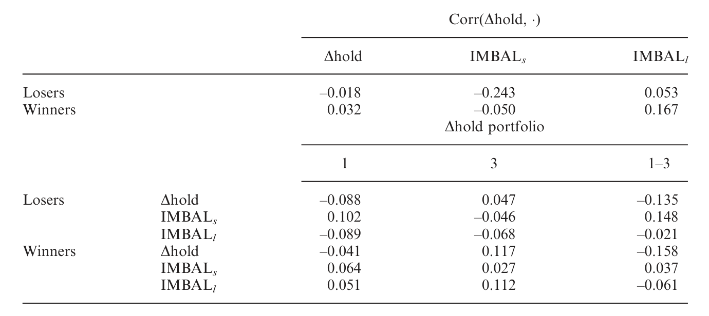
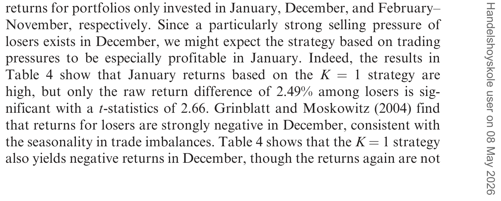
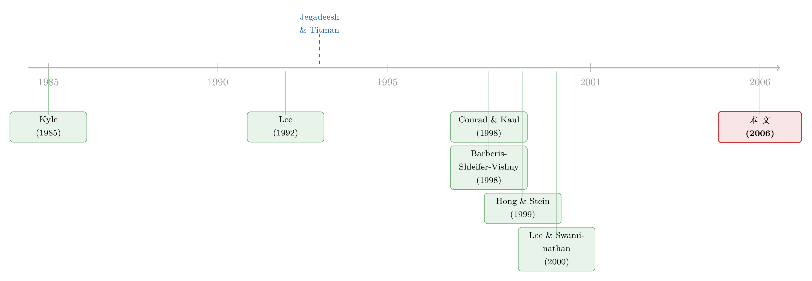

动量到底是谁干的？——把成交单拆成大小两摞来看
本文读的是 Hvidkjaer (2006, Review of Financial Studies)：作者用 1983–2002 年全部 NYSE/AMEX 股票的逐笔成交数据，把每一笔交易按金额拆成「小单」和「大单」，去看在 Jegadeesh-Titman 动量组合里到底是谁在买、谁在卖。结论是——小单（散户）对过去的收益反应极其迟钝，先是「该卖不卖」的初始反应不足，再慢慢演变成一年后的强烈抛压；而大单（机构）几乎看不到这种迟钝，更像是早早就在顺势而为。更关键的是，形成期的小单失衡能显著预测未来的动量收益，说明散户的反应不足，确实是动量效应的一部分推手。
1 引言：一个被问了三十年的"为什么"
Jegadeesh 和 Titman (1993) 留给金融学一个挥之不去的事实：买入过去半年到一年的赢家、卖空同期的输家，能在接下来的几个月里持续赚钱。这个 动量效应 (momentum effect) 顽固到让人不安——它扛过了样本外检验，在非美国市场上也成立，在原始样本期之后依然存在。它不像一个统计噪声，更像是市场效率假说身上的一道裂缝。
于是一个根本性的问题被反复追问：这种收益的延续，到底是从哪里来的？
学界给出了两条路。一条是行为金融的解释：天真的投资者带着有偏的预期入场，要么对消息反应不足、要么过度自信，价格因此慢慢地、而不是一步到位地调整。另一条是理性的解释：动量不过是预期收益在横截面上的差异，跟时间序列上的可预测性无关（Conrad and Kaul, 1998）。
两条路争了很多年，但争论的对象一直是收益——大家盯着 portfolio 的回报曲线，反复地切片、调整、归因。本文作者却换了个角度，问了一个朴素得近乎"笨"的问题：
如果动量真是某种行为偏差造成的，那这种偏差总得通过有人真金白银地买、有人真金白银地卖才能反映到价格上吧？那我们为什么不直接去看，赢家和输家的成交单里，到底是谁在动手？
这就是这篇文章的全部出发点。Shleifer (2000) 有一句话被作者反复引用：认知偏差和资产价格之间的链条，就是投资者的买卖行为本身。既然如此，与其在收益里绕圈子，不如直接走到交易这一层，看看成交的指纹是否和某个行为假说对得上。
（关于"异象收益究竟是被谁推动的"这个更一般的问题，可参见《异象收益究竟是谁推动的？——把每一个百分点拆给「投资者」和「动机」》。）
2 第一步：把"谁在买卖"看清楚
要看清交易，先得解决两个技术问题。
其一，每一笔交易既是买、又是卖，怎么定方向？ 市场微观结构区分了主动方和被动方：主动交易者用市价单索取即时性，通常在报价中点之上成交（买）、之下成交（卖）；被动方则通过做市或限价单提供即时性。价格主要随主动方的方向变动——无论她只是单纯消耗流动性，还是因为她可能掌握了私有信息（Kyle, 1985；Glosten and Milgrom, 1985；Easley and O'Hara, 1987）。所以交易失衡 (trade imbalance) 指的是主动交易者之间的失衡：主动卖多于主动买，就是卖压；反之就是买压。
具体怎么给每笔交易贴上"买"或"卖"的标签？数据本身（ISSM 和 TAQ）不告诉你这个，于是作者用了微观结构里的标准做法——Lee and Ready (1991) 算法：成交价在报价中点之上记为买、之下记为卖，正好落在中点上的就用"tick test"，拿它和前一笔成交价比。
其二，怎么区分散户和机构？ 这一步是全文的命门。作者没有机构/个人的身份标签，他用的是 Lee (1992) 的代理变量——按成交金额的大小来分。小单大概率来自个人投资者，大单大概率来自机构。这不是凭空假设：Lee and Radhakrishna (2000) 用 TORQ 数据验证了"用成交规模代理个人 vs. 机构"的有效性，并指出按公司规模来调整切分点能进一步提高准确率（小公司流动性差，机构在那里也只能拆成小单交易）。
于是作者按公司规模五分位、逐月校准出一套公司特定的金额切分点，大致是这样：
| 规模五分位 | 最小 | 2 | 3 | 4 | 最大 |
|---|---|---|---|---|---|
| 小单上限（美元） | 3,400 | 4,800 | 7,300 | 10,300 | 16,400 |
| 大单下限（美元） | 6,800 | 9,600 | 14,600 | 20,600 | 32,800 |
中间还故意留了一个"缓冲带"（介于上限和下限之间的中单），把模糊地带踢出去，好让小单和大单的对比更干净、更有功率。接下来全部分析都只看小单和大单这两摞。
3 怎么量"买卖压力"：交易失衡指标
有了买卖标签和大小分类，接下来要把"买卖压力"压缩成一个数。对每只股票 \(i\)、每一天 \(t\)、每个规模组 \(g\in\{s,m,l\}\)（小、中、大），原始的交易失衡定义为净主动买入量相对买卖平均量的比例：
（当 \(\max(\text{BUYVOL}_{git},\text{SELLVOL}_{git})=0\) 时取 0。）这个指标的好处是它只看方向、不看体量：分子是净方向，分母把规模抹平了，所以一只巨无霸和一只小盘股的失衡可以放在一起比。
但这里有个微妙之处：不同股票、即便没有任何错误定价，也可能天生有不同的"预期失衡"——比如大公司、S&P 500 成分股、流动性好的股票，本身就更容易被某一方主动买卖。作者想隔离的是动量带来的那部分失衡，所以他先把原始失衡对一堆特征做横截面回归，每天都跑一次：
$$ \widetilde{\text{IMBAL}}_{gi} = a_0 + a_1 \text{SIZE}_i + a_2 \text{BM}_i + a_3 \text{AMEX}_i + a_4 \text{SP500}_i + a_5 \hat{\sigma}_i + a_6 \text{SPREAD}_i + a_7 \hat{\gamma}(1)_i + a_8 \text{DIVYLD}_i + \sum_{j=1}^{18} \delta_j \text{SIC}_{ij} + \text{IMBAL}_{gi} $$
控制变量的选择都有讲究：规模、账面市值比、行业是收益的标准控制项；标准差 \(\hat{\sigma}_i\) 抓总风险；S&P 500 哑变量同时捕捉指数套利和投资者可见度（Merton, 1987 的"投资者识别"）；报价价差 \(\text{SPREAD}_i\) 和一阶自协方差 \(\hat{\gamma}(1)_i\) 作为流动性/非流动性的度量（Amihud and Mendelson, 1986 的流动性clientele效应）；股息率 \(\text{DIVYLD}_i\) 则因为除息日附近的交易动机。回归残差 \(\text{IMBAL}_{gi}\) 就是"异常交易失衡"——剥掉了上述特征之后，仍然剩下的那部分买卖压力。
最后把组合 \(p\) 里所有股票的异常失衡取平均，得到组合层面的失衡：
$$ \text{IMBAL}_{gpt} = \frac{1}{n}\sum_{i\in p}\text{IMBAL}_{git} $$
到这里，工具备齐了。剩下的就是把这套"成交指纹"扫描仪，对准动量组合的形成期和持有期。
4 三种假说，三种"成交指纹"
在看数据之前，作者先做了一件很漂亮的事——把不同假说翻译成可观测的交易失衡形态（论文的 Table 1）。这一步是全文论证的脊梁：因为只有先把"如果……那么成交应该长这样"写清楚，后面的数据才能真正起到证伪的作用。
- 理性的"预期收益差异"假说（Conrad and Kaul, 1998）：形成期里赢家因为好消息会有买压、输家有卖压；但一旦过了形成期，没有新消息了，就不该再有任何方向性的买卖失衡。
- 反应不足 / 延迟反应假说：如果投资者需求阻碍了价格对公开消息的充分调整，那么持有期里应当出现——输家的初始买压、随后转为卖压；赢家则反过来，初始卖压、随后转为买压。这种事件时间上的方向反转，正是行为模型的关键预测。
- 动量交易（顺势交易）假说：交易者主动追赶趋势，赢家买、输家卖，且这种压力在持有期初期就出现、之后归零。
这三张"指纹卡"的妙处在于：它们在持有期的形态截然不同。反应不足要求一个慢慢出现、再慢慢反转的失衡；理性模型要求持有期没有失衡；动量交易要求一个早早出现、随后消失的失衡。于是只要把真实数据的失衡曲线画出来，就能看它和哪张卡片对得上。
5 主要结果：小单的"慢半拍"对上大单的"先知"
把扫描仪打开，最惊人的反差出现了：小单和大单，过的几乎是两种人生。
先看小单（散户）。在输家股票上，形成期的大部分时间里是买压——散户在过去半年里一直在逢低买这些已经在跌的股票；到形成日，这股买压变得非常强；可随后卖压才慢慢渗进来，并在差不多一年后达到顶峰。这正好踩中了"反应不足 + 延迟反应"那张指纹卡：先是该卖不卖（初始反应不足），再是迟到的、拖了一整年的抛售（延迟反应）。赢家这边也看得到延迟反应——形成日之后的六个月里，小单买压逐渐浮现。
再看大单（机构），画面完全反过来：输家在形成期里遭遇强烈的大单卖压，到形成日卖压骤然下降，之后一年里慢慢消失；赢家则是大体对称的买压。也就是说，大单几乎看不到反应不足或延迟反应的痕迹，相反，它的形态更像是知情交易——平均而言，大交易者在做（早期的）动量交易，早早地买赢家、卖输家。
这个"大单更像知情、小单更像迟钝"的结论，还能用一个完全独立的数据源交叉验证。作者拿季度的机构持股变动来对照，发现机构持股的变化和大单失衡正相关、和小单失衡负相关——这恰好说明大单确实更多反映机构、小单更多反映个人。如表 3 所示，在输家组合上，机构平均净卖出了约 1.8% 的流通股，方向与那股大单卖压完全一致。

Table 3: shows that institutions sold on average 1.8% of the shares out-
到这里，作者已经把"谁在迟钝"这件事讲得很扎实了。但一个尖锐的问题立刻浮出来：散户的迟钝固然好看，可它真的推动了价格吗？还是说，这只是一群无关紧要的人在角落里慢吞吞地买卖、对收益毫无影响？
6 真正关键的一步：从"交易压力"到"价格压力"
这是全文最难、也最漂亮的一跳。
难点在于因果：延迟反应和动量收益是在持有期里同时发生的，你没法简单地说"因为延迟卖压、所以输家继续跌"——它们纠缠在一起。但作者抓住了一个突破口：输家在形成期就已经表现出的散户初始反应不足，是先于持有期的。如果这种初始的买卖压力真的会转化成价格压力，那它就应该能预测后面的收益。
于是他在动量组合内部，再按形成期的交易失衡二次排序，然后看随后的收益。结果很硬：
在输家里，形成期带着强烈小单卖压的那一组，显著跑赢带着强烈小单买压的那一组。用六个月形成期、六个月持有期（跳过形成日后的第一个月），两组经特征调整（按规模、账面市值比、行业）的收益之差是每月
0.48%，t 值3.28。
换句话说：散户越是在某只输家上"逢低买入"（买压），这只股票后面跌得越凶；散户越是在抛售（卖压），它后面反而越抗跌。散户的钱，像是站错了队——而这种站错队，恰恰喂养了动量。
更有意思的是，这个效应集中在高换手的股票里。高换手输家中，强小单卖压组比强小单买压组每月高出约 0.60%；高换手赢家里也有显著关系；而在低换手股票里，失衡和未来收益基本无关。
这把我们引向另一篇经典——Lee and Swaminathan (2000) 发现动量和换手率有交互作用，并提出换手率本身也携带了"投资者情绪偏向某只股票"的信息。本文的小单失衡，正是一个天然的散户情绪度量。两者放在一起，作者发现：低换手输家呈现形成期卖压、高换手输家呈现强买压——这与 Lee-Swaminathan"高换手输家比低换手输家表现更差"的发现严丝合缝。反过来按失衡先排序，又会看到换手率的预测力集中在有买压的股票里。两个情绪指标，互相印证。
（关于"散户追涨"这件事的跨国证据，可参见《股票涨了，他们为什么更想交易？——46 国市场里的一条「追涨」暗线》；关于"买卖双方谁是聪明钱"，可参见《买卖双方各执一词：当 193 个异象告诉你「谁是聪明钱」》。）
7 一月的影子：税收驱动交易会不会是真凶？
读到这里，一个谨慎的读者会担心：会不会这一切其实只是税损抛售 (tax-loss selling) 的季节性把戏？Grinblatt and Moskowitz (2004) 早就指出动量和收益的季节性相连，暗示税收驱动的交易在影响收益。
作者直面了这个担忧。他确实在交易压力里看到了明显的税收季节性痕迹——输家在年末出现小单卖压、紧接着一月出现买压，这正是散户年底为抵税抛掉亏损股、年初再买回来的经典图景。

Table 4: show that January returns based on the K 1 strategy are
但关键在于：主结论并不是被季节性驱动的。输家身上"初始小单买压、延迟小单卖压"这条主线，是贯穿全年的，并不只在年末年初出现。换句话说，税收效应是叠加在上面的一层季节性噪声，把它剥掉之后，散户反应不足的故事依然站得住。这个区分做得很克制，也很重要——它把"动量 = 一月税损交易"这个偷懒的替代解释挡在了门外。
8 文献脉络
把这篇文章放回它生长的那条藤蔓上，会看得更清楚。
源头是 Jegadeesh and Titman (1993)，它把动量钉成了一个无法回避的事实。随后，解释的战争分成两个阵营：一边是理性派，Conrad and Kaul (1998) 主张动量只是预期收益的横截面差异；另一边是行为派，Barberis, Shleifer, and Vishny (1998) 的保守型投资者对消息反应不足、Daniel, Hirshleifer, and Subrahmanyam (1998) 的过度自信、以及 Hong and Stein (1999) 的"信息在有限理性的人群里缓慢扩散"，都在给"反应不足/延迟反应"提供微观机制。

但这些理论争的都是收益。真正让本文与众不同的，是它接上了另一条更"接地气"的脉络：Lee (1992) 用盈余公告前后的小单买压，第一个让我们看见"散户的成交"可以被单独识别出来；Lee and Swaminathan (2000) 把换手率和动量缝在一起，提出成交量也是情绪的尺子。本文站在这两条线的交汇处——它不去争论收益该归因于谁，而是直接走到交易这一层，用大小单的成交指纹，给行为派提供了一份"交易级"的证据。最后，它还顺手处理了 Grinblatt and Moskowitz (2004) 提出的税收季节性，把它和主效应清晰地分开。
评论与延伸（Q&A + 研究方向）
(a) 几个可能的疑问
Q：用"成交金额大小"代理散户和机构，靠谱吗？这会不会从根上动摇结论？
这是全文最脆弱、也最被作者认真对待的一环。它的辩护来自 Lee and Radhakrishna (2000) 用 TORQ 数据做的直接验证，以及按公司规模调整切分点、留缓冲带的工程化处理。再加上季度机构持股变动这个独立数据源的交叉验证（大单与机构增持正相关、小单负相关），代理的方向性是可信的。但要承认：到了 2000 年代后期，机构越来越多地把大单拆成小单算法化执行，这个代理在更晚的样本里会越来越糊——所以本文的结论更稳的是 1983–2002 这段历史。
Q：形成期失衡能预测收益，这是"价格压力"，还是只是"散户挑错了股票"的相关关系？
严格说，这仍是预测性证据，不是干净的因果。作者的巧思在于用"先于持有期的初始失衡"来打破同期纠缠，但失衡和未来收益之间，仍可能藏着某个未被控制的共同特征。论文已经用横截面回归剥掉了规模、BM、流动性、行业等一堆变量，能做的控制都做了；但"散户买压预示低收益"既可以解释成"散户的买盘压不住价、反映的是错误定价"，也可以解释成"散户系统性地买入了某类将来表现更差的股票"。后者其实也是行为故事，只是机制不同。
Q：这跟"动量交易者推高了价格"是一回事吗？
不是，反而几乎相反。大单（机构）才像在做动量交易（早买赢家、早卖输家），但大单失衡对随后的收益几乎没有预测力。真正预测收益的是小单失衡，而且方向是"散户买压 → 后续更差"。所以本文的故事不是"动量交易者自我实现地推高了趋势"，而是"散户的反应不足拖慢了价格调整"。
Q：为什么效应偏偏集中在高换手股票？
因为高换手本身可能就是散户情绪在某只股票上沸腾的信号（Lee and Swaminathan, 2000）。换手高、又有强买压的输家，等于"一群兴奋的散户在逢低抢一只其实还要继续跌的股票"，这正是反应不足最浓的地方，所以可预测性也最强。低换手股票里没人那么激动，失衡也就不携带太多信息。
Q：理性派（Conrad-Kaul）的解释被彻底否掉了吗？
没有被"彻底"否掉，但被削弱了。理性的预期收益差异假说预测持有期不该有方向性失衡；而数据里清清楚楚地出现了"先买后卖"的事件时间反转，这是理性模型给不出的。所以本文的证据更偏向行为解释，至少说明动量里有一部分是散户行为驱动的——注意作者用词很克制，是"partly"。
Q：把中单（缓冲带）扔掉，会不会丢掉了信息、甚至制造了偏差？
缓冲带是为了提高识别功率（把模糊归属的交易踢出去，让大小单的对比更干净），这是方法上的取舍而非偏差来源。代价是损失了一部分样本，但作者还做了基于股数（<1000 股为小、≥2000 股为大）的替代分类，结果定性一致，说明结论对切分方式不敏感。
(b) 几个可能的研究问题与提案
1. 把"大小单"框架搬到公司债市场。 【经济故事】公司债是机构主导、散户极少的市场，但近年 ETF 和零售平台让散户敞口上升。如果把 TRACE 的逐笔成交按金额拆成大小单，能不能在信用利差的动量/反转里，复刻出"谁迟钝、谁知情"的图景？信用市场的反应不足可能比股票更强（流动性更差、信息扩散更慢）。 【可行性】中。TRACE 有逐笔成交和方向推断的成熟方法，规模切分点可借鉴本文思路；难点是债券没有连续报价、Lee-Ready 难直接用，需要用交易商-客户方向或 dealer markups 来定向。
2. 外资持有人是"大单知情"还是"小单迟钝"？ 【经济故事】本文的大单≈机构、小单≈个人，但没区分本地 vs. 外资。外资常被指责是"追涨杀跌"的不稳定资金。把成交按"可能的外资来源"再切一刀，看外资的成交指纹更像知情的大单，还是迟钝的小单，能直接检验"外资是蝗虫"的说法。 【可行性】中偏低。逐笔数据里没有国籍标签，需要在有外资身份标识的市场（如韩国、中国台湾的交易所账户级数据）做。识别策略可借本文的事件时间失衡曲线。（与《外资真是「蝗虫」吗？》的问题互补。）
3. 算法化执行普及后，"成交金额"代理还活着吗？ 【经济故事】本文样本止于 2002 年。此后机构普遍把大单切成小单算法下单，"小单 = 散户"的等式可能逐渐失效。一个直接的研究是：用 2003 年后带身份标签的数据（如某些交易所的账户级数据），逐年估计"小单中散户占比"的衰减曲线，给所有用 trade-size 代理的文献划一条"保质期"。 【可行性】高（若能拿到账户级数据）。这本身就是对一整类方法的体检，价值很高。
4. 把失衡曲线做成"情绪因子"，检验它能否解释截面收益。 【经济故事】小单失衡是一个干净的散户情绪度量。能否把它构造成一个横截面情绪因子，看它对动量、反转、彩票型股票等"行为味"很重的异象有没有解释力？ 【可行性】高。数据和方法本文都已铺好，主要是把单只股票的失衡聚合成因子并跑标准的截面定价。
我的判断
这篇文章的真正贡献，不在于又发现了一个能预测收益的变量，而在于它换了观察的层次——从争论"收益该归因于谁"，下沉到"成交单里到底是谁在动手"。把行为假说翻译成可观测的事件时间失衡形态（Table 1 那一步），再用大小单的指纹去比对，这种"先写好证伪条件、再让数据说话"的做法，方法论上是极其干净的。它给行为派提供了一份难得的、交易级的直接证据：散户确实在反应不足，而且这种迟钝部分地喂养了动量。
我对识别的两点保留：其一，"大小单 = 个人/机构"这个代理是整栋楼的地基，地基的可靠性随算法交易兴起而衰减，所以结论的外推应当谨慎地限定在 1983–2002；其二，形成期失衡预测收益，仍是预测性而非因果性的证据，"散户买压压不住价"和"散户系统性地买了将来更差的股票"在数据上很难分开，而后者其实指向一个不同的行为机制。
我接下来最想看到的，是把这套框架放进信用市场和带身份标签的数据里：一方面用账户级数据直接验证 trade-size 代理到底还剩多少效力，另一方面看在散户极少、机构主导的债券市场里，"谁迟钝、谁知情"的故事会不会被改写。如果连机构主导的市场里都能找到反应不足的痕迹，那行为解释的版图就要再扩一圈。
参考文献
- Amihud, Y., and H. Mendelson (1986). Asset Pricing and the Bid-Ask Spread. Journal of Financial Economics 17, 223–249.
- Barberis, N., A. Shleifer, and R. Vishny (1998). A Model of Investor Sentiment. Journal of Financial Economics 49, 307–343.
- Conrad, J. S., and G. Kaul (1998). An Anatomy of Trading Strategies. Review of Financial Studies 11(4), 489–519.
- Daniel, K., D. Hirshleifer, and A. Subrahmanyam (1998). Investor Psychology and Security Market Under- and Overreactions. Journal of Finance 53(6), 1839–1885.
- Easley, D., and M. O'Hara (1987). Price, Trade Size, and Information in Securities Markets. Journal of Financial Economics 19, 69–90.
- Glosten, L. R., and P. R. Milgrom (1985). Bid, Ask and Transaction Prices in a Specialist Market with Heterogeneously Informed Traders. Journal of Financial Economics 14, 71–100.
- Grinblatt, M., and T. J. Moskowitz (2004). Predicting Stock Price Movements From Past Returns: The Role of Consistency and Tax-Loss Selling. Journal of Financial Economics 71(3), 541–579.
- Hong, H., and J. C. Stein (1999). A Unified Theory of Underreaction, Momentum Trading and Overreaction in Asset Markets. Journal of Finance 54(6), 2143–2184.
- Hvidkjaer, S. (2006). A Trade-Based Analysis of Momentum. Review of Financial Studies 19(2), 457–491.
- Jegadeesh, N., and S. Titman (1993). Returns to Buying Winners and Selling Losers: Implications for Stock Market Efficiency. Journal of Finance 48, 65–91.
- Kyle, A. S. (1985). Continuous Auctions and Insider Trading. Econometrica 53(6), 1315–1335.
- Lee, C. M. (1992). Earnings News and Small Traders. Journal of Accounting and Economics 15, 265–302.
- Lee, C. M., and B. Radhakrishna (2000). Inferring Investor Behavior: Evidence from TORQ Data. Journal of Financial Markets 3(2), 83–111.
- Lee, C. M., and M. J. Ready (1991). Inferring Trade Direction from Intraday Data. Journal of Finance 46(2), 733–746.
- Lee, C. M., and B. Swaminathan (2000). Price Momentum and Trading Volume. Journal of Finance 55(5), 2017–2069.
- Merton, R. C. (1987). A Simple Model of Capital Market Equilibrium with Incomplete Information. Journal of Finance 42(3), 483–510.